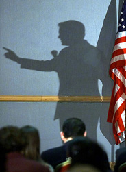

Shadow of the Anti-Gore

Gore Debates the Anti-Gore
 Gore:
I'm for campaign reform. I'm going to get soft money out of politics. Governor
Bush didn't take notes on what McCain was saying, but I did. Vote for me because
I'm squeeky clean. No one has ever accused me or the Clinton administration of any
financial misdealings.
Gore:
I'm for campaign reform. I'm going to get soft money out of politics. Governor
Bush didn't take notes on what McCain was saying, but I did. Vote for me because
I'm squeeky clean. No one has ever accused me or the Clinton administration of any
financial misdealings.
Anti-Gore:
Yes, my mealy-mouthed opponent has a campaign finance "reform" plan alright.
And he is going to put Charlie "Christmas" Trie and Johnny "the White House is
like a subway--you have to put in coins to open the gates" Chung in charge of
it. But Al, come on, did you really have to wear Buddhist saffron robes when
you announced your reform plan?
Gore:
I created the Information Superhighway.
Anti-Gore:
That's nothing.
I created the Information Superhighway Patrolman software program to protect
our children from having to view pornography, hate speech, and conservative
ideas on the Internet.
Gore:
Well, wait just a minute, Mr. Anti-Gore.
I supported the NSA's Echelon, and the FBI's wiretap-ready, programs of spying
on every phone, fax, email, and other electronic communication to make sure
there aren't any pornographers, spies, terrorists, or Confederate-flag-waving
right-wing Republicans around.
Anti-Gore:
Boy, you sure have been busy. I feel much safer now with Big Brother Al watching
over me.
Gore:
Eric Segal's Love Story was written about me and Tipper.
Anti-Gore:
Segal said the man in Love Story was based on Tommy Lee Jones and
the coed had nothing in common with Tipper. But let's leave that aside.
William Burrough's Naked Lunch was written about me and someone I
won't name.
Gore:
Bill Clinton is the first black President.
Anti-Gore:
Ha, ha, ha, ha, ha! At least he lies a lot better than you.
|